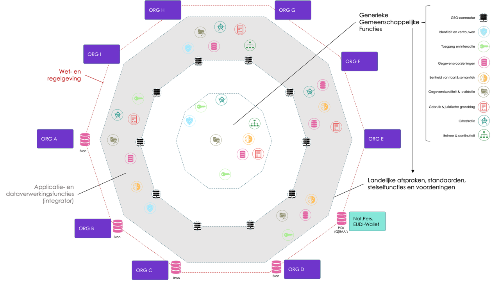

Gemeenschappelijke Bronontsluiting (GBO)¶
Eerste ontwerp - ter bespreking
Concept
ICTU | April 2026
LET OP: Deze versie van het Globaal Ontwerp is nog in ontwikkeling en dient primair voor de discussie en verdere uitwerking van dit ontwerp, de projectstartarchitectuur en het technisch ontwerp. Er kunnen geen rechten aan dit document ontleend worden.
1 Inleiding en doel¶
Diverse ontwikkelingen op nationaal (o.a. NDS, Regie op Gegevens, Wdo) en Europees vlak (o.a. Data Act, SDG, EUDI-Wallet) maken dat gegevens in overheidsbronnen breder en flexibeler gebruikt moeten kunnen worden. De verschillende ontwikkelingen zorgen voor een uitdaging bij de bronhouders: zij moeten verschillende gegevensstromen bedienen met verschillende protocollen, technologieën en grondslagen.
Het afsprakenstelsel FDS werkt aan het delen van gegevens binnen de overheid op een eenduidige, veilige en flexibele manier. Maar voor internationale gegevensuitwisselingen, uitwisselingen met private dienstverleners en het uitgeven van credentials biedt FDS (nog) geen oplossingen.
Het project Gemeenschappelijke Bronontsluiting (GBO) realiseert stelselfuncties waarmee overheidsgegevens op een interoperabele, veilige, gecontroleerde en privacybeschermende manier beschikbaar worden gesteld aan drie typen afnemers:
- Private dienstverleners op basis van burgertoestemming (DvTP - Data delen via toestemming met private dienstverleners).
- Europese overheden via het Single Digital Gateway/Once Only Technical System (SDG/OOTS).
- Burgers en organisaties via het EDI-Stelsel (eIDAS2/ARF).
In figuur 2 is geschetst hoe een dergelijk stelsel er in de praktijk uit kan komen te zien.

Het doel van GBO is om interoperabiliteit en hergebruik bij gegevensuitwisselingen te bevorderen en op die manier de implementatielast bij partijen - zowel bronhouders als afnemers - te verlagen. Dit zowel bij gegevensuitwisselingen tussen overheidspartijen als tussen overheid en private partijen.
GBO is geen nieuw, losstaand stelsel. Het sluit aan op het Federatief Datastelsel (FDS) als basisafsprakenstelsel en Trusted Information Partners voor publiek-private interacties. Het breidt gericht de afspraken, standaarden en voorzieningen binnen deze afsprakenstelsels uit die nodig zijn voor de drie toepassingen.
In dit document is nog wel sprake van een GBO-stelsel en GBO-voorzieningen, maar dat is enkel om het stuk leesbaar te houden. Alle afspraken en voorzieningen moeten landen in bestaande afsprakenstelsels.
De juridische basis wordt gevormd door een wettelijk kader en lagere regelgeving. Zolang die grondslag nog niet in werking is getreden, lopen technische uitwerking en wetgevingstraject parallel aan elkaar.
In dit globaal ontwerp wordt op hoofdlijnen uiteengezet welke stelselvoorzieningen nodig zijn en hoe deze ingericht kunnen worden. Het doel van dit globaal ontwerp is het ophalen van input op de geschetste oplossingsrichting en het verder uitwerken van het ontwerp. Die uitwerking gebeurt in de volgende stukken:
- Projectstartarchitectuur: kaders en richtlijnen voor het ontwerp en de inrichting van de stelselvoorzieningen;
- Technisch ontwerp: technisch ontwerp van de benodigde voorzieningen;
- Informatiemodellen (nog niet beschikbaar): informatie- en gegevensmodellen van de gegevens die uitgewisseld worden - zowel de gegevens die opgevraagd worden, als gegevens die nodig zijn voor veilige, betrouwbare uitwisseling (zoals toestemmingen, "trusted lists", etc.);
- Requirements (nog niet beschikbaar): een overzicht van de functionele en niet-functionele eisen die aan het stelsel en de daarin opgenomen afspraken, standaarden en voorzieningen worden gesteld.
Relatie met bestaande stelsels¶
GBO hergebruikt maximaal wat er al is:
- FDS als afsprakenstelsel met o.a. FSC en FTV als standaarden voor gefedereerde connectiviteit en toegang.
- Afspraken en standaarden in TIP verband.
- Europese afspraken en standaarden (o.a. EIF, eIDAS, SDG/OOTS, ARF) en de Nederlandse invulling hiervan (o.a. NL-Wallet, centraal Nederlands OOTS toegangspunt).
- Pseudonimiseringsvoorziening (BSNk PP of PRS - hier moet nog over besloten worden).
- PBAC architecturen voor autorisatie en toegang.
Waar FDS generieke afspraken, standaarden en voorzieningen als landelijk afsprakenstelsel invult, voegt GBO afspraken en standaarden van stelselfuncties toe die nog niet zijn bepaald, maar wel nodig zijn om DvTP, EDI-Stelsel en de OOTS-adapter voor een bronhouder eenduidig te laten functioneren.
Met TIP wordt samengewerkt om ook landelijke en Europese standaarden en afspraken te bereiken in het kader van publiek-private samenwerking. Door beide afsprakenstelsels nader te verankeren kunnen overheids- en private partijen in toenemende mate de interoperabiliteit bij gegevensuitwisselingen verbeteren en stelsels beter en met meer Regie op Gegevens inrichten.
2 Interactiepatronen¶
GBO ondersteunt drie interactiepatronen, elk met eigen actoren, grondslagen en protocollen. De drie interactiepatronen worden in volgende paragrafen geschetst.
2.1 Patroon A - gegevensverzoek van private partij (DvTP)¶
Een private dienstverlener haalt overheidsgegevens op bij een bronhouder, uitsluitend op basis van een geldige juridische grondslag. In het geval van DvTP is dit een wettelijk vastgestelde toestemming voor het delen van gegevens met private dienstverleners. De burger authenticeert zich via DigiD of een ander eIDAS authenticatiemiddel op het vereiste betrouwbaarheidsniveau en geeft geïnformeerde toestemming voor een specifiek doel, een specifieke afnemer en een specifieke set gegevens. GBO registreert de toestemming in een toestemmingenregister, levert een consent-id aan de private partij, valideert deze op het moment van uitvraag real-time, en zorgt dat het BSN de private partij nooit bereikt - in de plaats daarvan ontvangt de afnemer een partijspecifiek pseudoniem.
De bronhouder controleert of de private partij bevoegd is om de gegevens op te vragen, controleert het consent_id en of de gegevensvraag binnen de scope valt. Uit het consent_id wordt het BSN van de betrokkene herleid en het antwoord aan de private partij wordt geleverd als REST- of GraphQL response in het afnemersformaat.
2.2 Patroon B - burger gebruikt EDI-Wallet¶
Een burger vraagt een overheidsattribuut op als verifieerbare credential (VC) voor opname in zijn EDI-Wallet. De wallet initieert een OID4VCI-ophaalverzoek richting GBO, dat de bron bevraagt en het resultaat retourneert als SD-JWT VC of mdoc (ISO 18013-5). De credential is cryptografisch gezegeld door de bronhouder en kan daarna door de burger worden gepresenteerd aan dienstverleners via OID4VP, zonder verdere tussenkomst van GBO.
GBO ondersteunt functioneel/technisch in dit patroon de rol van PuB-EAA-uitgevende instantie, maar is zelf geen PuB-EAA verstrekker. De verificatiedienst voor QTSP's die zelf credentials willen uitreiken of verifiëren is een aanvullend GBO-component. Beide diensten (PubEAA-verstrekker en verificatiedienst) maken gebruik van een autorisatiedienst die door GBO aangeboden wordt.
2.3 Patroon C - grensoverschrijdend verzoek via SDG/OOTS¶
Een Europese overheidsdienst stuurt via het OOTS-netwerk een Evidence Request voor een Nederlandse burger. RINIS fungeert als nationaal OOTS-toegangspunt (AS4/eDelivery), verzorgt de toestemmingsinteractie met de burger en de identiteitsvaststelling, en geeft de payload als REST/JSON door aan GBO. GBO verzorgt de bronontsluiting en de semantische mapping naar het SDG Evidence-formaat. Bronhouders zien uitsluitend de GBO-API en hoeven geen OOTS-kennis te hebben. De terugkoppeling volgt de omgekeerde route: GBO retourneert aan RINIS, RINIS verpakt in AS4.
Het voordeel voor bronhouders is dat ze met GBO hun gegevens met één implementatie kunnen ontsluiten voor DvTP, EDI en SDG-OOTS. Voor afnemers van gegevens is het voordeel dat ze op een uniforme wijze diensten kunnen aanroepen en gegevensbronnen kunnen benaderen in termen van identificatie, authenticatie, connectiviteit, diensten, autorisatie en toegang.
3 Generieke functies en stelselfuncties¶
GBO is opgebouwd uit acht generieke functieclusters die samen de volledige gegevensstroom afdekken, van identiteitsvaststelling en toestemmingsbeheer tot bronontsluiting en beheer. De functies zijn technologieneutraal beschreven.
Elke generieke functie wordt ingevuld door een of meer stelselfuncties: concrete afspraken, standaarden en/of voorzieningen. In de paragrafen hieronder zijn de generieke functies per cluster uitgewerkt, met de bijbehorende stelselfuncties en hun huidige inrichtingsstatus.
3.1 F1 — Identiteit & Vertrouwen¶
Identificatie en authenticatie van burgers en organisaties; digitale identiteitsmiddelen en PKI; audit logging van iedere gegevensuitvraag.
Van toepassing op: alle drie patronen.
| Stelselfunctie | Status | Voornaamste gap / actie |
|---|---|---|
| S03 — Burgeridentificatie & Pseudonimisering | BSNk PP beschikbaar; PRS binnenkort beschikbaar; integratie nodig | Onboarding DvTP-partijen als deelnemer; consent_id-koppeling |
| S04 — Organisatie-authenticatie & Vertrouwensstelsel | FDS Poortwachter/Marktmeester beschikbaar | GBO-aansluitvoorwaarden; QTSP-erkenningsprofiel; KvK↔OIN↔eIDAS-koppeling |
3.2 F2 — Toegang & Interactie¶
Toestemmings-UI voor de burger; SSO; machtigen; consent met toestemmingenregister; PEP/PDP/PIP-keten; ODRL.
Van toepassing op: alle drie patronen.
| Stelselfunctie | Status | Voornaamste gap / actie |
|---|---|---|
| S01 — Toestemmingenregistratie | Nog te realiseren ⚠️ | Toestemmingsregister; ODRL-profiel; PIP-interface; afhankelijk van benodigde wet- en regelgeving |
| S02 — Toestemmingsportaal (Burger Interactie) | Nog te realiseren ⚠️ | DvTP/SDG-OOTS-UI; inzage & intrekking; koppeling toestemmingenregister; aansluiting MijnOverheid? |
| S05 — Autorisatie (PEP/PDP/PIP) | OPA/Rego; GBO-inrichting nog nodig | PEP/PDP referentie-implementatie per bronhouder; AuthZEN NLGov profiel; Policy Store / PAP (zie S06) |
| S06 — Beleidsbeheer & -distributie (PAP) | Nog te ontwerpen ⚠️ | Centrale voorziening voor het beheren en distribueren van OPA/Rego-policy-bundles naar alle bronhouder-PDPs en de FSC Manager. Policies worden als gesigneerde OCI-bundles beschikbaar gesteld en asynchroon opgehaald door decentrale PDPs (OPA Bundle API). De PAP is het technisch-bestuurlijke gezagspunt van het stelsel: hij bepaalt wat iedere deelnemer mag. Vereist een expliciete governance-afspraak over wie policies mag schrijven, wijzigen en goedkeuren. |
3.3 F3 — Gegevensvoorziening¶
Generieke bronontsluiting API; REST/GraphQL; service directory; lokalisatie; selectieve bevraging; OOTS-adapter (RINIS-koppeling); W3C-VC; mdocs.
Van toepassing op: alle drie patronen.
| Stelselfunctie | Status | Voornaamste gap / actie |
|---|---|---|
| S07 — Gegevensontsluiting (Bronontsluiting API) | FSC beschikbaar; GraphQL nog niet gestandaardiseerd als API type | Query Template Registry; GraphQL positionering in FDS; GBO-vertaallaag |
| S08 — OOTS-adapter (Grensoverschrijdend) | RINIS basisinrichting beschikbaar | GBO ↔ RINIS REST-koppeling; SMP-beheer; SDG-EDM mapping; toestemmingspreview-vraagstuk |
| S11 — Attesteringsuitgifte (PuB-EAA / QEAA) | Nog te realiseren ⚠️ | OID4VCI-endpoint; credentialschema's; signing-infrastructuur; QTSP-verificatiedienst |
3.4 F4 — Semantiek & Eenheid van Taal¶
Vocabularia (GGM, RDF, SKOS); mapping GBO-canoniek naar SDG-EDM, VC-schema en JSON.
Van toepassing op: OOTS (SDG-evidencetype), EDI-Wallet (VC-schema).
| Stelselfunctie | Status | Voornaamste gap / actie |
|---|---|---|
| S10 — Semantiek & Gegevenscatalogus | DCAT-AP NL verplicht in FDS | GBO-canonieke definities per bronhouder; mapping naar SDG-EDM en VC-schema's |
3.5 F5 — Gegevenskwaliteit & Validatie¶
SHACL-validatie; herkomstregistratie (W3C PROV-O); feedbackloops naar bronhouders.
Van toepassing op: alle drie patronen.
| Stelselfunctie | Status | Voornaamste gap / actie |
|---|---|---|
| S10 — Semantiek & Gegevenscatalogus | DCAT-AP NL verplicht in FDS | Validatieprofielen (SHACL) per dataset; herkomstregistratie; feedbackproces richting bronhouders |
3.6 F6 — Grondslag & Beleid¶
Toestemmingenregister; consent-records; grondslagen-/doelbindingstoets vanuit policies; PEP/PDP/PIP-keten.
Van toepassing op: alle drie patronen.
| Stelselfunctie | Status | Voornaamste gap / actie |
|---|---|---|
| S01 — Toestemmingenregistratie | Nog te realiseren ⚠️ | Zie F2 |
| S05 — Autorisatie (PEP/PDP/PIP) | OPA/Rego (als bewezen implementatie); GBO-inrichting nog nodig | Zie F2 |
| S06 — Beleidsbeheer & -distributie (PAP) | Nog te ontwerpen ⚠️ | Zie F2 |
3.7 F7 — Orkestratie & Integratie¶
Procesorkestratie over patronen; formaat-mapping; event-afhandeling.
Van toepassing op: alle drie patronen.
| Stelselfunctie | Status | Voornaamste gap / actie |
|---|---|---|
| S07 — Gegevensontsluiting (Bronontsluiting API) | FSC beschikbaar; GraphQL nog niet gestandaardiseerd als FDS-type | Zie F3 |
| S08 — OOTS-adapter (Grensoverschrijdend) | RINIS basisinrichting beschikbaar | Zie F3 |
3.8 F8 — Beheer & Continuïteit¶
Logging; monitoring; versiebeheer; incidentbeheer; SLA-bewaking.
Van toepassing op: stelselbreed.
| Stelselfunctie | Status | Voornaamste gap / actie |
|---|---|---|
| S09 — Logging, Audit & Traceerbaarheid | Standaarden beschikbaar; GBO-invulling nodig | Centraal auditlog; herleidbaarheidsprofiel; koppeling aan autorisatieketen |
Overzicht: stelselfuncties en generieke functies¶
De onderstaande tabel geeft een totaaloverzicht van alle stelselfuncties met hun relatie naar de generieke functies.
| Stelselfunctie | Generieke functie(s) | Status |
|---|---|---|
| S01 — Toestemmingenregistratie | F2, F6 | Nog te realiseren ⚠️ |
| S02 — Toestemmingsportaal (Burger Interactie) | F2 | Nog te realiseren ⚠️ |
| S03 — Burgeridentificatie & Pseudonimisering | F1 | BSNk PP beschikbaar; integratie nodig |
| S04 — Organisatie-authenticatie & Vertrouwensstelsel | F1 | FDS Poortwachter/Marktmeester beschikbaar |
| S05 — Autorisatie (PEP/PDP/PIP) | F2, F6 | OPA/Rego; GBO-inrichting nog nodig |
| S06 — Beleidsbeheer & -distributie (PAP) | F2, F6 | Nog te ontwerpen ⚠️ |
| S07 — Gegevensontsluiting (Bronontsluiting API) | F3, F7 | FSC beschikbaar; GraphQL nog niet gestandaardiseerd als FDS-type |
| S08 — OOTS-adapter (Grensoverschrijdend) | F3, F7 | RINIS basisinrichting beschikbaar |
| S09 — Logging, Audit & Traceerbaarheid | F8 | Standaarden beschikbaar; GBO-invulling nodig |
| S10 — Semantiek & Gegevenscatalogus | F4, F5 | DCAT-AP NL verplicht in FDS |
| S11 — Attesteringsuitgifte (PuB-EAA / QEAA) | F3 | Nog te realiseren ⚠️ |
Legenda: ⚠️ = nog te realiseren als nieuwe GBO-voorziening.
4 Afwijkingen en aanvullingen op FDS¶
GBO gebruikt het Federatief Datastelsel (FDS) en het in wording zijnde TIP-Afsprakenstelsel als basisafsprakenstelsels en bouwt daar zoveel mogelijk op voort. FDS biedt al een aantal cruciale bouwstenen: FSC als standaard voor koppelingen, FTV als standaard voor autorisatie, DCAT-AP NL voor datacatalogisering en de stelselfuncties Poortwachter en Marktmeester voor onboarding en nalevingsbeheer.
Voor de drie GBO-toepassingen (DvTP, EDI-Stelsel en SDG/OOTS) is echter meer nodig dan FDS op dit moment biedt. In dit hoofdstuk wordt per onderwerp beschreven wat FDS al levert, wat er nog ontbreekt, en wat er dus afgesproken of ontwikkeld moet worden — hetzij als aanvulling op FDS, hetzij als nieuw onderdeel.
Juridische randvoorwaarde: toestemming als afdwingbare grondslag (onderwerp 1) is pas operationeel na inwerkingtreding van de daarvoor benodigde wet- en regelgeving. De technische uitwerking loopt parallel aan het wetgevingstraject.
4.1 Toestemming en grondslag als afdwingbaar autorisatiemechanisme¶
FDS schrijft voor dat gegevensuitwisseling op een geldige grondslag berust, maar legt geen technische invulling op voor toestemmingsbeheer of real-time grondslagraadpleging. FTV biedt een autorisatieraamwerk dat gebruikt kan worden voor het per-uitvraag raadplegen van een extern toestemmingenregister als PIP, en de doelbindingstoets kan uitvoeren die DvTP vereist.
Wat er nog moet worden afgesproken of gerealiseerd:
- Een pseudonimiseringsprofiel voor GBO/DvTP: BSNk PP als verplichte voorziening zodat het BSN private partijen nooit bereikt. De consent_id fungeert als brug tussen pseudoniem aan de private zijde en BSN-resolving aan de bronhouderzijde.
- Een toestemmingsportaal voor de burger: een overheidsgerichte UI voor het geven, inzien en intrekken van toestemming, gekoppeld aan het toestemmingenregister.
- Een toestemmingenregister als machineleesbare centrale voorziening, waarbij toestemming gekoppeld is aan doel, afnemer en gegevensset (doelbinding), intrekking onmiddellijk effect heeft. Het register is als PIP real-time raadpleegbaar is door de autorisatieketen.
- Een PEP/PDP/PIP-keten op basis van AuthZEN en OPA/Rego, als concrete invulling van het FTV-autorisatieraamwerk voor GBO-toepassingen. Policies worden centraal beheerd via een PAP en gedistribueerd naar decentrale PDP-instanties per bronhouder.
- Een PAP (Policy Administration Point) als centraal GBO-component voor het beheren en distribueren van gesigneerde OPA/Rego-policy-bundles. Dit is tevens het bestuurlijk gezagspunt van het stelsel: het bepaalt wat iedere deelnemer mag. Er is een expliciete governance-afspraak nodig over wie policies mag opstellen, wijzigen en goedkeuren.
4.2 GraphQL als selectief bevragingsmechanisme¶
FDS hanteert REST als standaard datadienst-type (NL API Strategie / REST API Design Rules). REST ondersteunt selectieve gegevensuitvraag op veldniveau structureel niet: een afnemer ontvangt de volledige dataset die het endpoint retourneert, ook als slechts een deel van de velden nodig is. Dataminimalisatie is daarmee afhankelijk van afspraken en implementatiekeuzes, niet structureel ingebouwd.
Wat er nog moet worden afgesproken of gerealiseerd:
- Positionering van GraphQL als FDS-datadienst-type: GBO introduceert GraphQL als aanvullend bevragingsmechanisme naast REST, waarbij dataminimalisatie structureel is ingebouwd. Dit vergt een formeel wijzigingsvoorstel richting FDS. GraphQL is in productie bewezen bij het iWlz-afsprakenstelsel en is compatibel met FSC Inway/Outway.
- Een Query Template Registry: een centrale catalogus van vooraf geregistreerde en afdwingbare gegevensvragen per use case. Afnemers kunnen alleen opvragen wat voor hun specifieke toepassing is geregistreerd.
- Een GBO-vertaallaag voor bronhouders die geen eigen GraphQL-implementatie willen of kunnen realiseren, zodat zij via een centraal geleverde adapter toch via GraphQL ontsluitbaar zijn.
- Uitbreiding van DCAT-AP NL met GBO-specifieke velden voor trajectactivatie en query-templateregistratie (voortbouwend op de bestaande FDS-verplichting).
4.3 SDG/OOTS-aansluiting¶
FDS is een binnenlands afsprakenstelsel en voorziet niet in grensoverschrijdende gegevensuitwisseling. SDG/OOTS vereist AS4/eDelivery als transportprotocol en het SDG Evidence Data Model (SDG-EDM) als semantisch kader — beide vallen buiten de scope van FDS.
Wat er nog moet worden afgesproken of gerealiseerd:
- Een OOTS-adapter (bij RINIS) die AS4/eDelivery-verkeer van EU-lidstaten vertaalt naar REST/JSON richting GBO, zodat bronhouders geen OOTS-kennis nodig hebben en uitsluitend de GBO-API zien.
- Semantische mappings van GBO-canonieke definities naar SDG-EDM XML per evidence type.
- Centrale SMP-serviceregistratie door GBO/RINIS voor Europese discovery, als expliciete afwijking van de decentrale logica die FDS hanteert voor data-aanbiederregistratie. Individuele bronhouders registreren zich niet zelf in de Europese infrastructuur.
- Besluitvorming over het toestemmingspreview-vraagstuk: de SDG-verordening verplicht een preview-scherm waarmee de burger het bewijsstuk ziet vóór afgifte. Momenteel ligt dit bij RINIS; als GBO de toestemmingsflow overneemt, moeten de verantwoordelijkheden opnieuw worden belegd.
4.4 Uitgifte van geverifieerde credentials voor de EDI-Wallet (PuB-EAA provider)¶
Het EDI-Wallet-traject vereist dat overheidsbronnen attributen kunnen uitreiken als verifieerbare credentials (VC) die de burger in zijn wallet opslaat en vervolgens presenteert aan dienstverleners. Dit patroon valt volledig buiten de scope van FDS.
Wat er nog moet worden afgesproken of gerealiseerd:
- Afspraken over de rol van GBO als PuB-EAA-ondersteuner: GBO biedt de infrastructuur voor uitgifte (OID4VCI) en presentatie (OID4VP), maar is zelf geen PuB-EAA-verstrekker in juridische zin.
- Credentialschema's per use case: semantische mapping van bronhouder-attributen naar de attestatieschema's die door de EDI-Wallet worden vereist.
- Een signing-infrastructuur voor het cryptografisch zegelen van credentials, conform eIDAS2/ARF en de relevante Europese Trusted Lists.
- Standaardisatie van de credentialformaten: SD-JWT VC voor online presentatie en mdoc (ISO 18013-5) voor offline/proximity-scenario's.
4.5 Verificatiedienst voor QTSP's (Authentic Source Interface)¶
Naast PuB-EAA-uitgifte vereist artikel 45e van eIDAS2 dat overheidsbronnen een verificatiefunctie bieden waarmee Qualified Trust Service Providers (QTSP's) bronhouder-attributen kunnen verifiëren voor eigen attestatie-uitgifte. Ook dit valt buiten de scope van FDS en is een nieuwe EU-rechtelijke verplichting.
Wat er nog moet worden afgesproken of gerealiseerd:
- Inrichting van een Authentic Source Interface (conform ETSI TS 119 478) als GBO-component, inclusief de I2 Verify- en I4 Authorize-interfaces.
- QTSP-aansluitvoorwaarden als aanvulling op het FDS-Poortwachterproces, inclusief certificaatprofielen conform ETSI EN 319 412.
- Afspraken over QTSP-erkenning en het bijbehorende vertrouwensanker in het GBO-stelsel.
5 Voorgestelde technische invulling¶
Dit hoofdstuk beschrijft de voorgestelde technische bouwstenen van GBO en hun onderlinge relatie. Het onderstaande diagram vormt de basis voor de verdere technische uitwerking.
5.1 Bouwstenen en hun rol¶
De technische architectuur van GBO bestaat uit de volgende hoofdbouwstenen:
FSC (Federated Service Connectivity). Binnenlands koppelnetwerk dat mTLS-gebaseerde verbindingen tussen GBO, bronhouders en private afnemers verzorgt. Elke deelnemer beheert een eigen FSC Inway (bronhouder) of Outway (afnemer). FSC is beschikbaar als open referentie-implementatie en is de standaard voor binnenlands dataverkeer in het FDS.
OAuth 2.0 / OpenID Connect. Autorisatieprotocol voor de uitgifte van toestemmingstokens na succesvolle burgeridentificatie (DigiD of ander eIDAS-middel). Het toestemmingstoken bevat de consent-id als brug naar het toestemmingenregister; het BSN zit niet in het token.
OPA/Rego (Open Policy Agent). Policy Decision Point voor real-time beleidsevaluatie. Policies zijn machineleesbaar, per traject instelbaar en centraal beheerd in een PAP. OPA/Rego is in productie bij het iWlz-afsprakenstelsel voor gevoelige zorgdata en is daarmee een bewezen keuze voor een overheidscontext met hoge privacyvereisten.
AuthZEN. Gestandaardiseerde koppelinterface (OpenID Foundation, draft) tussen de PEP en de OPA-PDP. Maakt de autorisatieketen protocolonafhankelijk en vervangbaar per component.
GraphQL. Bevragingsprotocol voor selectieve gegevensuitvraag op de bronontsluiting API. Queries zijn vooraf geregistreerd in de Query Template Registry en afdwingbaar door het PEP-beleid.
BSNk PP (Polymorf Pseudonimiseringsstelsel). In productie bij Logius. Verplicht voor alle DvTP-uitvragen: zet het BSN om naar een partijspecifiek, onomkeerbaar pseudoniem vóór enige verstrekking aan een private partij.
OID4VCI / OID4VP. OpenID-protocollen voor respectievelijk de uitgifte (GBO → wallet) en de presentatie (wallet → dienstverlener) van verifieerbare credentials. Vormt het technische fundament van het EDI-Wallet-patroon en mogelijke andere toepassingen van VC's.
SD-JWT VC / mdoc (ISO 18013-5). Credentialformaten voor de EDI-Wallet, conform het ARF. SD-JWT VC is het standaardformaat voor online presentatie; mdoc ondersteunt ook offline (proximity) scenario's.
AS4 / eDelivery (via RINIS). EU-transportprotocol voor het OOTS-berichtenverkeer. GBO communiceert via REST/JSON met RINIS; de AS4-laag is volledig bij RINIS belegd.
ODRL (Open Digital Rights Language). W3C-standaard voor machineleesbare beleidsrepresentatie. Wordt al ingezet in FDS en DCAT-AP NL voor beleidsbeschrijving.
5.2 Kernontwerpkeuzes¶
De referentiearchitectuur is gebaseerd op zes expliciete ontwerpkeuzes. De tabel hieronder vat elke keuze samen, legt de onderbouwing uit en benoemt de voornaamste implicatie voor de inrichting van het stelsel.
| Ontwerpkeuze | Beslissing | Onderbouwing | Implicatie |
|---|---|---|---|
| 1 - GraphQL als bevragingsprotocol | Bronhouders ontsluiten via GraphQL, niet via REST-endpoints. | REST vereist aparte endpoints of filterparameters per consent-scope, waardoor beleid en API-laag versnipperd raken. GraphQL maakt dataminimalisatie structureel: de afnemer vraagt exact de velden op die zijn consent-scope toestaat. In productie bewezen bij iWlz (gevoelige zorgdata). Compatibel met FSC Inway/Outway (ontwerpkeuze 5) en de NL API Strategie. | Bronhouders realiseren een GraphQL API of gebruiken een centrale GBO-vertaallaag. Alle toegestane gegevensvragen worden als query-templates geregistreerd in de GBO-catalogus. |
| 2 - Twee grondslagpaden, één PDP | Toestemming (DvTP) en wettelijke grondslag (OOTS, Gov-to-Gov) worden door dezelfde PDP geëvalueerd via twee afzonderlijke paden. | Eén autorisatieketen voor alle trajecten voorkomt parallelle handhavingspunten. Voor DvTP raadpleegt de PDP het toestemmingsregister real-time als PIP. Voor wettelijke grondslag is de basis ingebakken in het gesigneerde OPA-policy-bundle: geen PIP-aanroep, geen netwerkafhankelijkheid. | Het toestemmingsregister is de enige runtime-netwerkafhankelijkheid. Bij uitval zijn alleen DvTP-uitvragen geblokkeerd; wettelijke-grondslagvragen draaien door. PDP evalueert beide paden via AuthZEN. |
| 3 - BSNk PP voor pseudonimisering | Private dienstverleners ontvangen nooit het BSN. Het Toestemmingsportaal gebruikt BSNk PP (Logius) om partijspecifieke pseudoniemen te genereren. | Het BSN is wettelijk beschermd (Wabvpz). BSNk PP lost drie problemen op die eenvoudige PKI-encryptie niet kan: (1) private partij decrypteert naar pseudoniem, nooit naar BSN; (2) randomisatie maakt herhaald gebruik onkoppelbaar; (3) samenwerkende private partijen kunnen hun pseudoniemen niet aan elkaar koppelen. BSNk PP is al in productie bij Logius (eToegang, ~2019). | Onboarding van private dienstverleners als BSNk PP-deelnemer is verplicht. De consent_id is de brug tussen pseudoniem (private zijde) en BSN-resolving (bronhouderzijde). Geen nieuwe infrastructuur: integratie van bestaande Logius-voorziening. |
| 4 - Vijffactor-autorisatiemodel met gedistribueerde PDP | Iedere uitvraag doorloopt vijf onafhankelijke checks: (1) organisatie-identiteit via mTLS/PKI-O; (2) organisatierechten via FSC-contract + JWT; (3) grondslag via register of policy-bundle; (4) datascope via query-template; (5) verzoekgeldigheid via AuthZEN. Geen centrale autorisatieserver. | De vijf checks hebben elk een andere wijzigingsfrequentie en beheerder; scheiding maakt iedere laag onafhankelijk aanpasbaar. De FSC Manager evalueert (1) en (2) bij token-uitgifte; de bronhouder-PDP evalueert (3)-(5) per verzoek. Beide laden policies uit dezelfde centraal beheerde PAP (OCI-registry, gesigneerde OPA-bundles). Sector-PIPs (KvK, KNB, BIG) stellen de Manager in staat sectorlidmaatschap te verifiëren, zodat één sector-grant volstaat i.p.v. honderden individuele contracten. | Elke bronhouder draait een eigen PDP-instantie. GBO levert een referentie-implementatie. Policies worden centraal beheerd door het GBO-gremium en gedistribueerd via PAP. Sectorale PIPs moeten op de FSC Manager worden aangesloten. Er is geen centrale autorisatieserver nodig. |
| 5 - FSC als enige binnenlandse connectiviteitslaag | FSC is het enige binnenlandse transportprotocol voor alle trajecten. Er is geen aanvullend binnenlands transportprotocol nodig. | FSC biedt mTLS-authenticatie, PKIo-certificaatbinding en contractregistratie in één stack. Bronhouders implementeren één connectiviteitstandaard voor alle trajecten. FSC is de FDS-standaard voor binnenlands dataverkeer en beschikbaar als open referentie-implementatie. | Bronhouders implementeren één FSC Inway; afnemers één Outway. De AS4-adapter (ontwerpkeuze 6) vertaalt grensoverschrijdend verkeer aan de GBO-kant; bronhouders zien geen AS4. |
| 6 - AS4-adapter voor SDG/OOTS (EU-verplichting) | Grensoverschrijdend OOTS-verkeer wordt afgehandeld via een Domibus Access Point dat AS4/eDelivery vertaalt naar FSC/GraphQL. AS4 is uitsluitend voor dit grensoverschrijdende verkeer. | AS4/eDelivery is een EU-rechtelijke verplichting (Single Digital Gateway Verordening): geen architectuurkeuze maar een randvoorwaarde. De adapter isoleert alle EU-specifieke protocollen op één plek. Bronhouders hoeven geen OOTS-kennis te hebben. | De AS4-adapter (Domibus Access Point + OOTS-EDM adapter) is bij RINIS in beheer. SMP-serviceregistratie voor Europese discovery wordt centraal door RINIS beheerd, niet door bronhouders. |
5.3 Nog te realiseren componenten¶
De volgende bouwstenen zijn nog niet beschikbaar als GBO-voorziening en moeten worden gerealiseerd in het kader van GBO:
- Toestemmingenregister (centrale voorziening)
- Toestemmingsportaal voor burgers (inclusief inzage en intrekkingsfunctionaliteit)
- Centrale policy bundel of register met toepasbare grondslagen
- Query Template Registry (centrale catalogus van toegestane gegevensvragen)
- GBO-vertaallaag voor bronhouders zonder eigen GraphQL-implementatie
- PEP/PDP-referentie-implementatie voor bronhouders (deployable package)
- Keuze en inrichting centrale PAP
- PuB-EAA-uitgifte-component (OID4VCI-endpoint, credentialschema's per use case)
- QTSP-verificatiedienst
- Autorisatieserver t.b.v. Pub-EAA-uitgifte-component en QTSP-verificatiedienst
- GBO afsprakenstelsel (aansluitvoorwaarden, RFC-proces, stelselrollen) - nb: moet landen in bestaande stelsels FDS en TIP